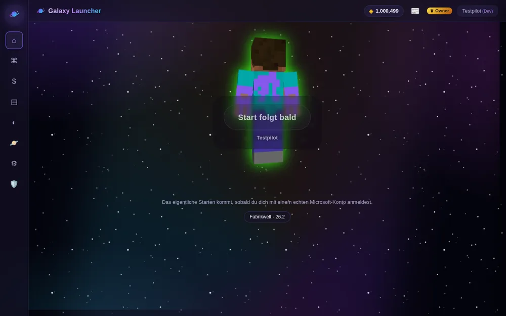
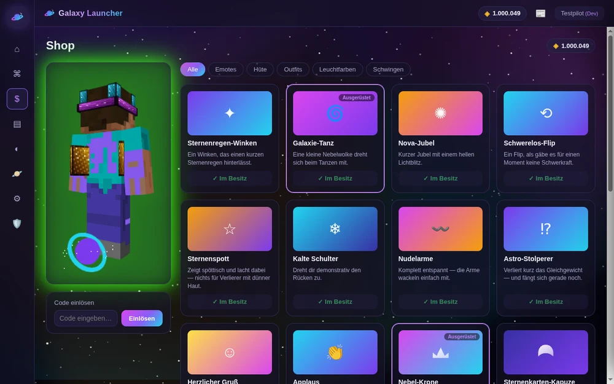
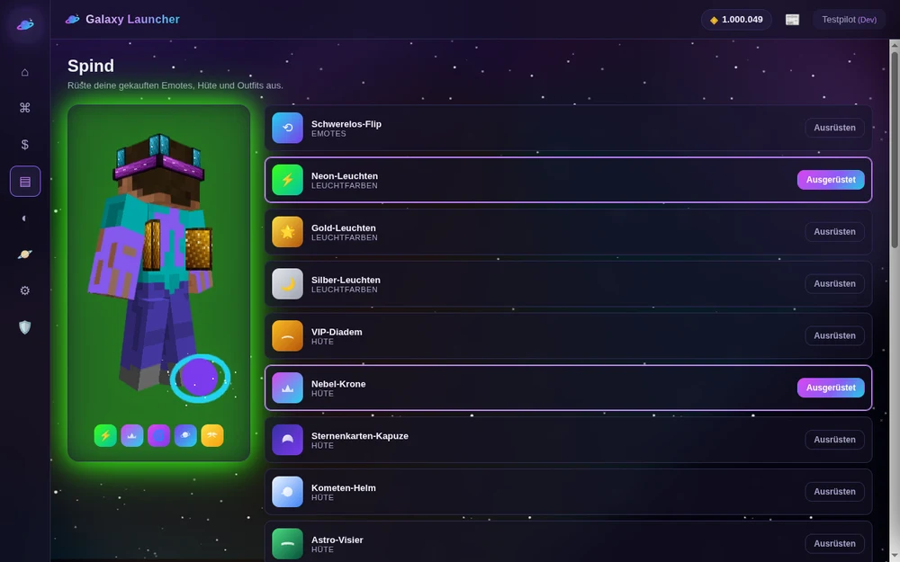
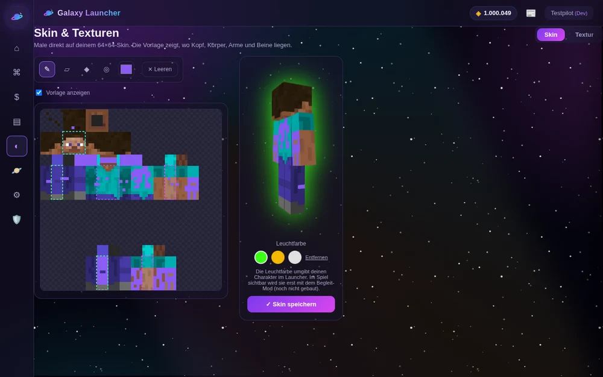

CPS-Counter
Deine Klicks pro Sekunde live im HUD — behalte deinen Rhythmus im Kampf im Blick.
Skins, Kosmetik und Mods, die man wirklich sieht — plus Shop, Spotify- und Discord-Integration, alles in einem Launcher.
Kostenlos. Quelloffen auf GitHub.
Nicht nur Kosmetik — Galaxy Launcher bringt die HUD-Tools mit, die auf jedem ernsthaften PvP- und SMP-Server dazugehören. Alles Anzeige/Komfort, nichts, was dir einen unfairen Vorteil gibt.
Deine Klicks pro Sekunde live im HUD — behalte deinen Rhythmus im Kampf im Blick.
WASD und Maustasten sichtbar auf dem Bildschirm — perfekt für Practice-Sessions und Clips.
Sieh in dunklen Höhlen und beim Nether-PvP alles — ohne die Spiel-Helligkeit selbst anzufassen.
Hüte, Schwingen, Outfits, Leuchtfarben und handanimierte Emotes — jedes Stück handgepixelt, echt sichtbar an deinem Charakter, nicht nur im Menü.
Sammle und rüste Kosmetik aus, mit echter Live-Vorschau deines Charakters — kein Rätselraten, wie es aussieht.
Mods direkt von Modrinth durchsuchen und installieren — Abhängigkeiten werden automatisch mit aufgelöst.
Sieh, was gerade läuft, und steuere Play/Pause/Skip direkt aus dem Launcher — per Taste, ohne das Spiel zu verlassen.
Zeigt Freunden automatisch, was du gerade spielst — aktualisiert sich mit deiner gewählten Instanz.
Chat der letzten Minuten durchsehen und Verstöße markieren, per Knopfdruck automatisch von einer KI prüfen lassen, echtes Warn-/Sperr-System mit vollständigem Log und Rückgängig-Funktion — plus zeitlich befristete Admin-Codes für Vertraute.
Ehrlicher Vergleich mit dem offiziellen Microsoft-Launcher, nicht mit anderen Community-Launchern.
Kein wiederverwendetes Farbschema — jeder Hut, jedes Paar Schwingen ist von Hand gepixelt, mit eigener Palette.




Für welches Betriebssystem?
Installer herunterladen und ausführen — der Setup-Assistent führt dich durch den Rest.
Installer herunterladen .exe · GitHub ReleasesDirekt im Terminal — die Befehle holen sich automatisch die jeweils neueste Version.
curl -sL $(curl -s https://api.github.com/repos/Mrdudidj/galaxy-launcher/releases/latest | grep "browser_download_url.*AppImage" | cut -d '"' -f 4) -o GalaxyLauncher.AppImage
chmod +x GalaxyLauncher.AppImage
./GalaxyLauncher.AppImagecurl -sL $(curl -s https://api.github.com/repos/Mrdudidj/galaxy-launcher/releases/latest | grep "browser_download_url.*deb" | cut -d '"' -f 4) -o galaxy-launcher.deb
sudo dpkg -i galaxy-launcher.debNein. Komplett kostenlos und quelloffen — keine Bezahlfunktionen auf dieser Webseite.
Windows und Linux, jeweils mit einem eigenen echten Installationsweg (siehe oben).
Zum Spielen ja, wie bei jedem anderen Minecraft-Launcher — das Anmelden ist der einzige Account, den Galaxy Launcher braucht.
Direkt im GitHub-Repository — Issues und Pull Requests sind willkommen.
Kostenlos, quelloffen, keine versteckten Käufe — installiert in ein paar Minuten.
Installationsanleitung öffnen